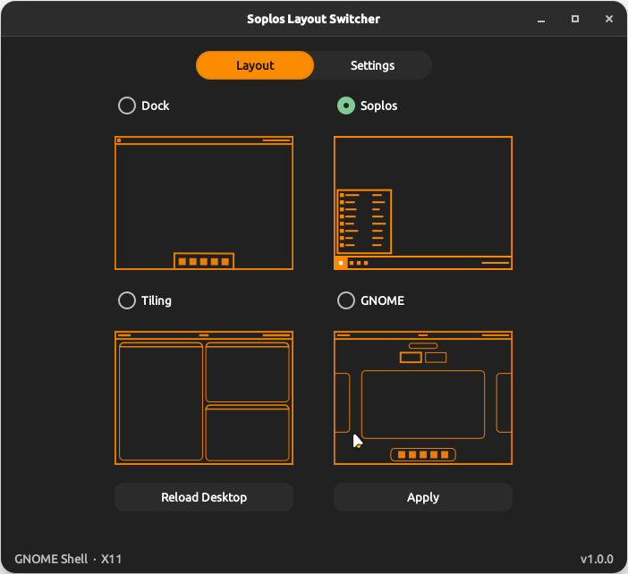
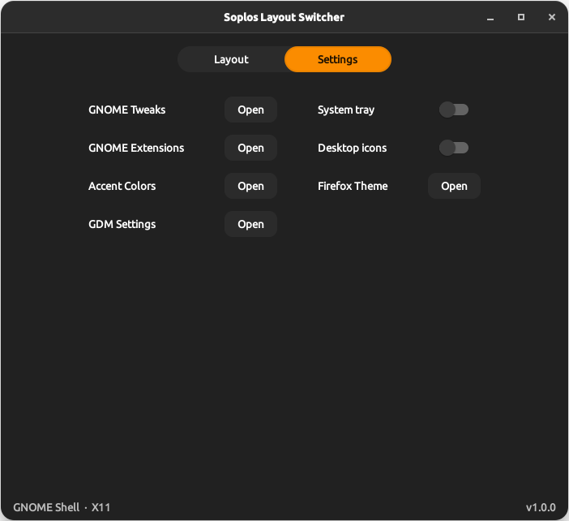

ES
ES FR
FR PT
PT DE
DE IT
IT RO
RO RU
RUOverview
Soplos Layout Switcher is a graphical utility for Soplos Boro (GNOME) that switches the desktop between four predefined GNOME Shell layouts. Selecting a layout enables the required extensions, disables conflicting ones and applies the matching gsettings in a single step.
A set of global extensions — CoverflowAltTab, Clipboard Manager, Desktop Cube, Drive Menu and User Themes — remains active in all layouts regardless of the selection.
Layouts
Soplos
The default Boro look. Enables Dash to Panel at the bottom (48 px icons, Soplos orange running indicator), ArcMenu in enterprise layout with Soplos branding, Desktop Icons NG and Quick Settings Tweaks.
Dock
A floating bottom dock. Enables Dash to Dock in floating mode at the bottom (80% screen width, 48 px icons) with the Soplos theme applied.
Tiling
A tiling window manager layout. Enables Forge (tiling engine), Dash to Dock on the left side (32 px icons, no custom theme), Open Bar in Islands style with the Soplos orange accent, AppIndicator Support, Blur my Shell and Workspace Indicator.
GNOME
Stock GNOME Shell with no layout extensions. All layout-specific extensions are disabled. Only the global extensions remain active.
Settings Tab
The Settings tab provides quick access to common GNOME configuration tools without leaving the application.
- Quick access buttons for GNOME Tweaks, Extensions manager, GDM Settings and Firefox theming (Add Water)
- System tray toggle (AppIndicator Support extension)
- Desktop icons toggle (Desktop Icons NG extension)
CLI
The soplos-layout-switcher-cli command applies any layout without opening the GUI, useful for installers and automation scripts.
apply-soplosapply-dockapply-tilingapply-gnomereload-gnome-shell
Screenshots

